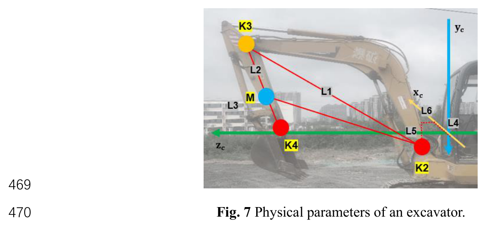
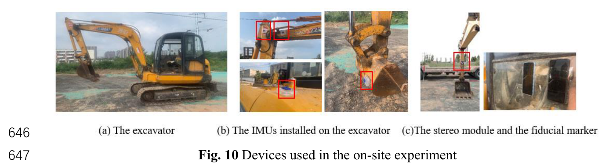
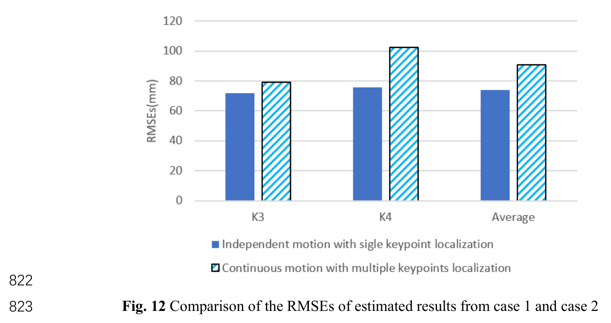

01 / KEY FINDINGS
정확도와 연속성을 함께 얻다
센서 융합의 가치는 평균 오차를 줄이는 데서 끝나지 않는다. 한 센서가 취약해지는 순간, 다른 센서가 추정을 이어 갈 수 있다는 데 있다.
단독 센서보다 작은 오차
전체 평균 오차의 이동 거리 비율은 카메라 1.65%, IMU 2.38%, 융합 1.21%로 보고됐다.
관측이 사라져도 이어지는 추정
연속 운동 중 카메라에 5~10초 결손이 발생한 구간에서는 IMU 기반 예측으로 궤적을 이어 갔다.
두 기체에서 확인한 개선
별도의 대형기 실험에서도 융합 오차 비율은 1.11%로, 카메라와 IMU 단독 결과보다 낮았다.
IMU는 “얼마나 돌았나”를,
카메라는 “지금 어디 있나”를 알려 준다.
02 / THE PROBLEM
굴착기는 한 점으로 설명되지 않는다
굴착기는 캐빈·붐·암·버킷의 움직임이 결합되는 장비다. 현장에서 장비와 사람의 접촉 위험을 감시하려면 장비의 위치만이 아니라, 각 부품이 어디에 놓여 있는지 알아야 한다. 이 연구는 이를 다섯 키포인트의 3차원 위치를 추정하는 문제로 다룬다.
어려움은 센서마다 다른 방식으로 오차가 생긴다는 점이다. 카메라는 가림, 조명 변화, 제한된 시야에 취약하다. IMU는 온도와 진동의 영향을 받으며, 각속도 적분에 의한 드리프트가 누적될 수 있다. 제공된 요약에서는 자이로 드리프트가 20초에 1° 이상 쌓이는 사례를 언급한다.
| 접근 | 현장 적용의 제약 |
|---|---|
| 마커·윤곽·딥러닝 비전 | 가림, 조명, 시야에 따라 관측이 불안정해진다. |
| IMU 기반 기구학 | 드리프트와 온도 영향으로 시간에 따른 편향이 생긴다. |
| 상보 융합 | 서로 다른 정보를 결합하지만, 같은 추정량의 불확실성을 직접 줄이는 데에는 한계가 있다. |
| 일부 로봇 말단 EKF | 동역학 파라미터가 필요하거나 단일 점에 집중해, 비침습 설치와 전신 추정에 제약이 있다. |
| 외부 기준 장비 | LiDAR·UWB 등의 추가 장비와 설치 비용을 고려해야 한다. |
연구진은 장비에 부착하는 온보드 센서로 접근했다. 붐·암 관절은 카메라와 IMU가 중복 추적해 보정하고, 캐빈 회전과 버킷 자세는 IMU로 보완한다. 같은 대상을 함께 측정하는 경쟁 융합과 서로 다른 정보를 채우는 상보 융합을 한 시스템에 배치한 것이다.
03 / HOW IT WORKS
마커 하나에서 전신 자세까지
관절을 잇는 다섯 개의 기준점
모델은 캐빈 끝 K1, 고정된 붐 관절 K2, 암 관절 K3, 버킷 관절 K4, 버킷 끝 K5를 사용한다. 키포인트는 모델의 한 평면에 놓이며, 카메라 기준 평면에서 계산한 뒤 캐빈 회전을 반영해 세계 좌표로 변환한다.
캐빈의 스테레오 카메라
앞창에 스마트폰 두 대를 설치하고 암 하부의 ArUco 마커 하나를 관측한다. 버킷이 흙에 가려져도 관측을 유지할 수 있는 위치를 택했다.
기선 100 mm · 대형기 150 mm
부품별 9축 IMU
캐빈·붐·암·버킷 표면에 부착한다. Madgwick 사원수 필터로 부품 방향을 구하고, 기구학을 통해 관절각을 계산한다.
보고된 블루투스 지연 < 15 ms

기하 디코더: 보이지 않는 관절을 복원한다
카메라가 직접 읽는 것은 마커 중심이다. 픽셀 모멘트로 중심을 찾고, 스테레오 깊이를 계산해 카메라 좌표로 옮긴다. 이후 붐 길이 L1, 암 관절에서 마커까지의 거리 L2, 암 길이 L3, 카메라와 붐 관절 사이의 오프셋 L4~L6를 이용해 K3를 계산한다. K4는 K3와 L2·L3의 관계로 얻는다.[1]
SENSOR FUSION / 처리 흐름
프레임 사이의 움직임 예측
K3·K4 위치 관측
카메라 측정이 없거나 이상치로 판단되면 해당 단계에서는 예측을 채택한다.
EKF: 각도 변화로 예측하고 위치로 고친다
캐빈에 고정된 카메라를 기준으로 키포인트를 2차원 평면에 투영하면 상태를 간결하게 표현할 수 있다. 필터 상태는 K3·K4의 좌표 네 개다. IMU가 제공하는 관절각 변화는 제어 입력, 카메라에서 복원한 좌표는 측정값이 된다.
STATE & PREDICTION · 원문 식 14–18 중 일부
고정 관절 K2를 중심으로 이전 좌표를 회전시키는 예측식이다. 여기에는 전체 상태 전이식 중 K3의 x 좌표만 표시했다.
| 기호 | 역할 |
|---|---|
| u1 | IMU로 구한 캐빈–붐 관절각 변화. |
| u2 | u1에 붐–암 관절각 변화를 더한 값. |
| Q, R | 공정·측정 잡음 공분산. 요약에는 Q = IδIMU2, R = IδCAM2와 잡음 설정값 0.1, 0.59가 제시돼 있다.[1] |
| H | K3·K4 좌표를 직접 관측하는 단위 행렬 블록 형태의 관측 행렬. |
-
서로 다른 샘플률을 맞춘다
100 Hz IMU 데이터를 30 fps 카메라의 프레임 사이에서 누적·적분해, 해당 시간 구간의 관절각 변화량으로 사용한다.
-
유효한 관측만 보정에 사용한다
측정과 예측의 차이가 문턱을 넘거나 관측이 없으면 예측을 채택한다. 이때 궤적은 이어지지만, 카메라를 통한 위치 보정은 중단된다.
-
버킷과 캐빈 정보를 더한다
K5는 버킷–암의 IMU 각도로 구하고, 캐빈 IMU의 회전각으로 세계 좌표 변환을 수행한다. 이 부분이 상보 융합에 해당한다.
04 / EVIDENCE
실차에서 무엇이 달라졌나
실험은 붐과 암을 각각 움직이는 독립 운동, 굴착과 덤프를 반복하는 연속 운동, 별도의 대형기 적용으로 구성됐다. 아래 장비 사진은 LOVOL FR65E2-H 기반 구성이며, 대형기 사례에는 Hitachi ZAXIS 240이 사용됐다.

비교 기준과 실험 구성
기준값은 장비 옆 약 2 m 위치에 설치한 RealSense D435i 두 대로 구성했다. 키포인트를 수동 라벨링하고, 여러 점과 두 카메라의 값을 평균하는 방식이다. 따라서 결과는 이 기준 측정 경로에 대한 비교이며, 기준값 자체의 불확실성도 함께 고려해야 한다.
| 사례 | 동작 | 표본 수 |
|---|---|---|
| 독립 운동 | 붐만·암만 각각 4회 반복 | IMU 2,100 카메라 630 |
| 연속 운동 | 굴착·덤프 2사이클 | IMU 3,024 카메라 907 |
| 대형기 적용 | Hitachi ZAXIS 240 | 제공 요약에 미기재 |
융합 방식은 모든 비교에서 오차가 작았다
| 평가 항목 | 카메라 단독 | IMU 단독 | 센서 융합 |
|---|---|---|---|
| 독립 운동K3 / K4 · mm | 110.4 / 120.6평균 115.5 | 131.2 / 171.5평균 151.4 | 71.8 / 75.7평균 73.8 |
| 연속 운동K3 / K4 · mm | 85.8 / 153.9평균 119.9 | 147.4 / 208.8평균 178.1 | 79.0 / 102.3평균 90.7 |
| 전체 평균 오차이동 거리 대비 비율 | 1.65% | 2.38% | 1.21%평균 오차 82 mm |
| 대형기 오차이동 거리 대비 비율 | 1.53% | 2.07% | 1.11% |
전체 평균 오차 / 이동 거리 비율 낮을수록 좋음 · 동일 척도

평균값 뒤에 있는 두 가지 실패 양상
카메라 궤적에는 희소 시차와 마커 미인식에 따른 이상치·0 값, 그리고 진동 잡음이 나타났다. 반면 IMU 궤적에서는 시간과 함께 커지는 편향이 관찰됐다. 연속 운동에서는 캐빈 선회에 따른 조명 변화로 카메라 관측이 5~10초 끊기기도 했다.
융합은 이러한 결손 구간을 IMU로 연결하고, 유효한 카메라 관측이 들어오면 다시 위치를 보정한다. 노트북에서 보고한 전신 자세 모델링 응답 시간은 0.038초다. 이 값은 실험 환경의 처리 응답 결과로 읽어야 한다.
05 / IMPLICATIONS
추정이 이어진다는 것과
정밀도가 유지된다는 것은 다르다
이 연구는 안전 감시를 위한 전신 자세 추정의 가능성을 보여 준다. 동시에 현장의 모든 조건에서 같은 정확도가 유지된다거나, 정밀 제어에 바로 사용할 수 있다는 근거까지 제공하는 것은 아니다.
-
현장 잡음 모델
관성 진동과 환경 간섭을 충분히 반영한 잡음 모델이 없다. 실제 동작과 환경에 맞는 모델을 만드는 것이 후속 개선 과제다.
-
장시간 관측 결손
조명이 나빠 카메라가 작동하지 않으면 IMU 단독 추정으로 퇴화한다. 궤적을 계속 출력하더라도 누적 오차를 억제할 보정 정보는 줄어든다.
-
용도별 오차 기준
제공된 요약은 82 mm를 감시 목적에 유용한 수준으로 평가한다. 다만 실제 감시 시스템의 허용 오차는 별도 검토가 필요하며, 정밀 제어 피드백의 적합성을 입증한 결과는 아니다.
현장에 남는 질문
좋은 센서 조합은 서로 다른 방식으로 실패하는 센서를 연결한다. 다음 실험에서 확인할 것은 평균 오차와 함께, 관측이 끊기는 순간부터 오차가 어떻게 커지고 다시 회복되는가다.
06 / SOURCE NOTES
원 논문과 읽기 범위
Full-body Pose Estimation for Excavators Based on Data Fusion of Multiple Onboard Sensors
Jingyuan Tang, Mingzhu Wang, Han Luo, Peter Kok-Yiu Wong, Xiao Zhang, Weiwei Chen, Jack C.P. Cheng
Automation in Construction · 2022 · 채택 원고판 기준 요약
HKUST · Loughborough University · University of Cambridge
- 기하 디코더는 원문 식 5·6 및 알고리즘 1, EKF 예측은 식 14–18, 세계 좌표 변환은 식 25에 대응한다는 제공 요약의 안내를 따랐다. 구현에 필요한 좌표계·잡음 설정값의 단위와 정의는 원문을 확인해야 한다.
- 수치와 실험 설명은 제공된 Obsidian 논문 요약을 바탕으로 재구성했다. 원문 대조를 통한 추가 검증은 수행하지 않았다. 약 27%·49%의 상대 감소율만 제공된 오차 비율로 계산했다.
- 그림 7·10·12는 제공된 로컬 이미지를 유지했다. 처리 흐름도와 비율 막대그래프는 요약 내용을 설명하기 위해 재구성한 시각화다.
- HR35 관련 내용은 적용을 위한 작성자 해석이다. 원 연구가 HR35 경사계나 해당 장비의 성능을 검증한 것은 아니다.